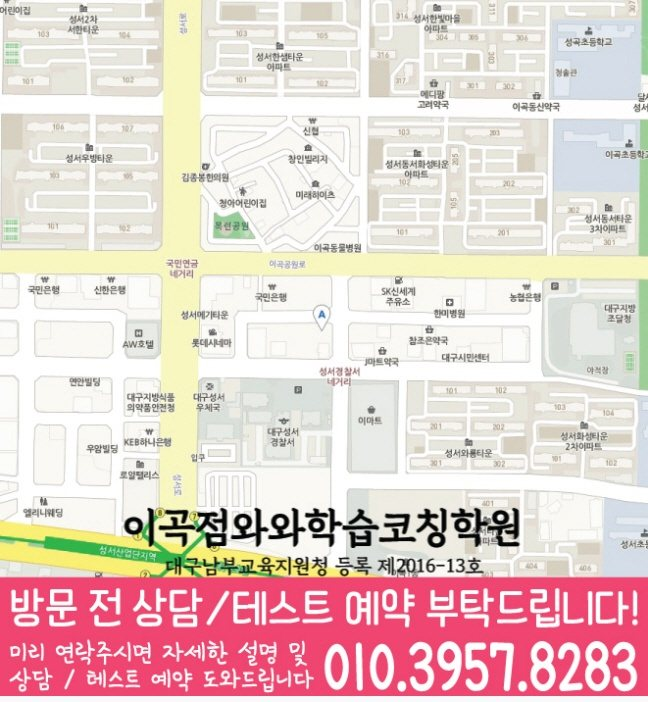

와와학습코칭센터 이곡점
대구광역시 달서구 이곡동 달구벌대로259길 33 제일빌딩 5층
GRADE 8 ENGLISH LOCAL GUIDE
와와학습코칭센터 이곡점의 위치와 과목별 가능 학년을 확인하고, 중2 영어 상담에 필요한 학교·학습 자료를 준비해 보세요.
와와학습코칭센터 이곡점의 영어 가능 학년 안내: 중2. 현재 수업 시간·반 편성·정원은 상담에서 확인해 주세요.
대구광역시 달서구 이곡동 달구벌대로259길 33 제일빌딩 5층
현재 반 편성과 시간표는 상담에서 확인
대구남부교육지원청 등록 제2016-13호
통합 상담 전화 010-6839-8283 · 문의할 때 와와학습코칭센터 이곡점과 학생의 학년을 말씀해 주세요.
교습비 자료의 과목·수업 시간·횟수와 별도 비용을 상담 내용과 함께 확인해 주세요.
아래는 가정에서 활용하는 일반 학습 점검 예시입니다. 현재 학교·교재에서 배우는 내용에 해당할 때 활용하고, 아직 배우지 않은 내용은 현재 진도에 맞춰 확인해 주세요. 학생의 학습 수준과 센터의 실제 수업 구성은 상담에서 확인할 수 있습니다.
시간 표현을 먼저 찾고 동사 형태가 맞는지 확인했나요?
직접 확인할 예 I was reading when the phone rang.에서 이어지던 행동과 그때 일어난 행동을 나누어 보세요. 현재 진도에 없는 형태라면 교재 표현부터 점검해 주세요.
시간, 이유, 조건 중 어떤 관계로 문장이 이어지는지 설명할 수 있나요?
직접 확인할 예 If it rains, we will stay inside.에서 밖에 나가지 않는 조건을 찾아보세요. 조건 부분과 결과 부분을 각각 표시해 보세요.
주어진 낱말을 모두 쓰되 뜻과 문장 구조를 함께 확인했나요?
직접 확인할 예 because / tired / I / went to bed early / was를 활용하면 I went to bed early because I was tired.로 쓸 수 있습니다. 주어 I가 두 절에 필요한 이유를 확인해 보세요.
틀린 문항의 근거 문장, 모르는 낱말, 읽기 어려운 구문을 나누어 적어 보세요. 정답만 베끼지 말고 오답을 고른 이유와 다시 읽어 찾은 근거를 짧게 기록해 주세요.
교재 이름·쪽수와 혼자 해결한 부분을 함께 표시하면 상담에서 현재 학습 상태를 설명하기 쉽습니다.
제공 자료의 중학교 참고 목록: 성산중학교.
학교 목록은 지역 참고 자료입니다. 해당 학교별 반 운영이나 시험 대비 수업을 확인한 정보는 아닙니다. 학생이 사용하는 교재, 실제 과목명·진도, 시험 범위 안내와 최근 오답을 준비해 주세요.
읽기·어휘·문장 쓰기 중 먼저 점검할 부분, 독해 답의 근거를 확인하는 방법, 고친 문장을 다시 확인하는 방법을 질문해 보세요.
위의 센터 정보에 적힌 가능 학년을 확인하고 현재 시간표·반 편성·과목 범위를 문의해 주세요. 이 질문과 학습 예시는 센터의 확정된 수업 방식이나 제공 서비스를 뜻하지 않습니다.
와와학습코칭센터 이곡점의 영어 가능 학년 안내: 중2. 현재 수업 시간·반 편성·정원은 상담에서 확인해 주세요.
학교 참고 목록은 성산중학교입니다. 학교별 전용 반 개설 여부는 별도로 확인해 주세요. 재학 학교와 학년을 알려 주고 학교 시험 범위표, 교과서와 수업 프린트를 바탕으로 상담할 수 있습니다.
수업 조건을 확인하는 중2 영어 상담에서는 맞고 틀린 결과보다 학생이 받은 설명과 다음 행동이 분명한지 확인하세요. 복습 기록에 ‘짧은 지문을 다시 읽고 정답 근거를 한 문장으로 설명하기’의 실행 여부와 다음 확인일을 함께 남기면 가정에서도 흐름을 살펴볼 수 있습니다.
센터의 교습비 자료와 상담에서 과목·횟수·수업 시간을 대조해 주세요. 교재비 등 별도 비용, 결석 시 보강 기준과 과제 피드백 방식도 함께 확인하면 좋습니다.
CONSULTATION SCENARIO
아래 두 장면은 중2 영어 상담 전에 준비할 자료와 질문을 정리한 점검 예시입니다.
가정 상담 장면: 성서의 한 학부모가 최근 자료 가운데 문장 구조와 문법 적용에서 막힌 문제와 영어 오답 유형 관련 학습 기록을 나눠 가져오고, 중2 영어 상담에서 제안할 첫 주 확인 항목과 다음 점검일을 질문하는 상황을 가정할 수 있습니다. 이 중2 영어 상담 장면은 실제 이용 후기나 특정 학생의 성과가 아니며, 상담 준비용 가상 예시입니다. 성서에서 중2 영어를 공부하는 학생의 학습 결과는 출발점과 실천 정도에 따라 달라질 수 있습니다.
비교 상담 장면: 성서에서 중2 영어를 공부하는 학생의 학교 일정과 통학 가능 시간을 적어 두고 와와학습코칭센터 이곡점에서 독해 근거 찾기 관련 기록을 확인하는 방식, 과제 조절 기준, 학부모 공유 항목을 묻는 장면을 생각해 볼 수 있습니다. 이 중2 영어 상담 장면에서 비교할 항목은 학생의 실제 자료와 가능한 일정에 맞춰 조정해야 합니다.


와와학습코칭센터 이곡점의 위치와 성서 생활권을 기준으로 중2 영어 상담 정보를 확인합니다. 방문 전 실제 이동 동선과 상담 가능 시간을 함께 확인해 주세요.